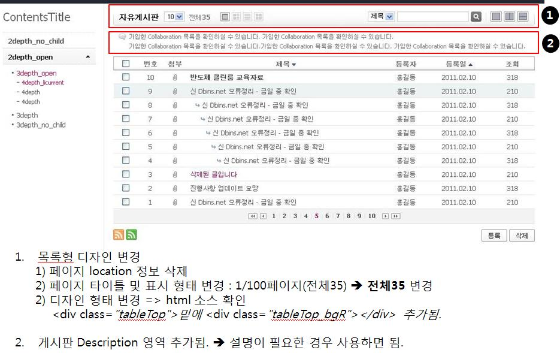

2011.5.12
변경사항을 다음과 같이 공지합니다. 아래 사항 확인 후 각 유닛별 UI Standard html 확인 후 변경해 주십시요.
1. 목록형 스타일 변경

2. 일반 화면 스타일 변경
3. 상세 내용보기 스타일 변경
상세 내용 스타일은 아래의 유닛이 해당됩니다.
게시판, Q&A, Collobation(일반게시판, 공지사항, 주간보고), 포럼, 아이디어, SocialBlog, Cafe
2011.5.4
변경사항을 다음과 같이 공지합니다. 아래 사항 외에도 가이드의 최종 html을 수시로 확인하여 주시기 바랍니다.
1. Leftmenu 소스 확인
Leftmenu의 첫번째 depth는 하위메뉴가 default로 opened 되어있어야 한다.
잘 안 된 케이스가 많으므로 모든 화면 점검요망 (소스는 해당 html을 참고)
예) <li class="licurrent opened liFirst">, <li class="opened">
2. Q&A와 Cafe의 서브화면 LeftMenu 소스 추가
Leftmenu에서 2depth 중 화살표 표시가 나오는 부분의 ul에 다음 class를 삽입한다. <ul class="qnalist_sub"> (소스는 해당 html을 참고)
3. 검색영역 디자인 변경
아래의 검색창을 사용한 모든 화면은 다음과 같이 변경한다. (소스는 해당 html을 참고)
4. mainContents 표기방식 변경
모든 페이지에서 mainContents를 검색하여 찾은 후 다음과 같이 변경한다. (기존의 mainContents_1~4는 모두 삭제)
유형 1. <div id="mainContents">
- 아래 페이지를 제외한 모든 화면
유형 2. <div id="mainContents" class="conPadding_1">
- 예) Team Collaboration (Collaboration 중 왼쪽메뉴의 폭이 좁은 화면이 모두 해당됨)
유형 3. <div id="mainContents" class="conPadding_2">
- 예) Social Blog, MicroBlogging (Left Menu가 없고 좌우 여백이 같은 경우가 해당됨)
유형 4. <div id="mainContents" class="conPPS">
- 예) Personal Portal Service
2011.4.20
테이블 Ellipsis 기능 사용법
ellipsis 기능을 쓰기 위해서는 말줄임 대상이 되는 내용을 다음 class로 지정해야 한다. <div class="ellipsis">내용</div>
이 때 주의할 점은 class를 td내에 쓰지 말고 별도 div나 p 태그 등으로 감싸야 한다.
또한 td 내에는 width를 반드시 표기하여야 한다.
| Ellipsis 사용방법 |
ellipsis 기능을 쓰기 위해서는 말줄임 대상이 되는 내용을 다음 class로 지정해야 한다. |
제목 |
내용 |
<div class="blockDetail">
<table summary="일반게시판">
<caption></caption>
<tbody>
<tr>
<th scope="row" width="18%">Ellipsis 사용방법</th>
<td width="32%"><div class="ellipsis">ellipsis 기능을 쓰기 위해서는 말줄임 대상이 되는 내용을 다음 class로 지정해야 한다.</div></td>
<th scope="row" width="18%">제목</th>
<td width="32%">내용</td>
</tr>
</tbody>
</table>
</div>
2011.3.25
변경사항을 다음과 같이 공지합니다.
1. new 아이콘
변경전 : <img src="../../images/theme/theme01/basic/ic_new.gif" alt="new" />
변경후 : <span class="ic_new"><span>new</span></span>
2. 태그 아이콘
변경전 : <img src="../../images/theme/theme01/basic/ic_tag.gif" alt="태그" />
변경후 : <span class="ic_tag"><span>태그</span></span>
3. 첨부 아이콘
변경전 : <img src="../../images/theme/theme01/basic/ic_attach.gif" alt="첨부" />
변경후 : <img src="../../images/icon/ic_attach.gif" alt="첨부" />
변경전 : <img src="../../images/icon/ic_attach_b.gif" alt="첨부파일" />
변경후 : <img src="../../images/icon/ic_attach.gif" alt="첨부" />
4. 팝업 닫기버튼
변경전 : <a href="#a"><img src="../../images/icon/ic_close_popup.gif" alt="닫기" /></a>
변경후 : <a href="#a"><span>닫기</span></a>
5. 검색 아이콘
변경전 : <a href="#a"><img src="../../images/theme/theme01/basic/ic_search.gif" alt="검색" /></a>
변경후 : <a href="#a" class="ic_search"><span>검색</span></a>
6. 검색영역 내의 search 버튼
변경전 : <div class="searchBtn"><a href="#a"><img src="../../images/theme/theme01/basic/btn_search.gif" alt="조회" /></a></div>
변경후 : <div class="searchBtn"><a href="#a"><span>Search</span></a></div>
7. 이름, 조회, 추천 등의 사이에 들어가는 bar
변경전 : <img src="../../images/theme/theme01/basic/bar_pageNum.gif" alt="" />
변경후 : <img src="../../images/common/bar_info.gif" alt="" />
8. 아이콘과 함께 쓰는 작은 버튼은 반드시 영문만 쓰고 class="button_ic"로 한다. class="button_s"의 버튼은 한글만 쓴다.
변경전 : <a class="button_s" href="#a">
변경후 : <a class="button_ic" href="#a">
9. Q&A 아이콘
변경전 : <img src="../../images/theme/theme01/basic/ic_qna_q.gif" alt="question" />
변경후 : <span class="ic_qna_q"><span>Question</span></span>
변경전 : <img src="../../images/theme/theme01/basic/ic_qna_a.gif" alt="answer" />
변경후 : <span class="ic_qna_a"><span>Answer</span></span>
변경전 : <img src="../../images/theme/theme01/basic/ic_qna_q_2.gif" alt="question" />
변경후 : <span class="ic_qna_q_2"><span>Question</span></span>
변경전 : <img src="../../images/theme/theme01/basic/ic_qna_a_2.gif" alt="answer" />
변경후 : <span class="ic_qna_a_2"><span>Answer</span></span>
10. 페이지 네비게이션
변경전 :
<div class="pageNum">
<ul>
<li><a href="#a" onclick="doSomething(); return false;"><img src="../../images/theme/theme01/basic/btn_page_first.gif" alt="첫페이지" /></a></li>
<li><a href="#a" onclick="doSomething(); return false;"><img src="../../images/theme/theme01/basic/btn_page_pre.gif" alt="이전페이지" /></a></li>
<li><span class="liFirst"><a href="#a" onclick="doSomething(); return false;">1</a></span></li>
<li><span><a href="#a" onclick="doSomething(); return false;">2</a></span></li>
<li><span><a href="#a" onclick="doSomething(); return false;">3</a></span></li>
<li><span><a href="#a" onclick="doSomething(); return false;">4</a></span></li>
<li><span>5</span></li>
<li><span><a href="#a" onclick="doSomething(); return false;">6</a></span></li>
<li><span><a href="#a" onclick="doSomething(); return false;">7</a></span></li>
<li><span><a href="#a" onclick="doSomething(); return false;">8</a></span></li>
<li><span><a href="#a" onclick="doSomething(); return false;">9</a></span></li>
<li><span class="liLast"><a href="#a" onclick="doSomething(); return false;">10</a></span></li>
<li><a href="#a" onclick="doSomething(); return false;"><img src="../../images/theme/theme01/basic/btn_page_next.gif" alt="다음페이지" /></a></li>
<li><a href="#a" onclick="doSomething(); return false;"><img src="../../images/theme/theme01/basic/btn_page_last.gif" alt="마지막페이지" /></a></li>
</ul>
</div>
변경후 :
<div class="pageNum">
<ul>
<li><a class="btn_page_first" href="#a" onclick="doSomething(); return false;"><span>첫페이지</span></a></li>
<li><a class="btn_page_pre" href="#a" onclick="doSomething(); return false;"><span>이전페이지</span></a></li>
<li><span class="liFirst"><a href="#a" onclick="doSomething(); return false;">1</a></span></li>
<li><span><a href="#a" onclick="doSomething(); return false;">2</a></span></li>
<li><span><a href="#a" onclick="doSomething(); return false;">3</a></span></li>
<li><span><a href="#a" onclick="doSomething(); return false;">4</a></span></li>
<li><span>5</span></li>
<li><span><a href="#a" onclick="doSomething(); return false;">6</a></span></li>
<li><span><a href="#a" onclick="doSomething(); return false;">7</a></span></li>
<li><span><a href="#a" onclick="doSomething(); return false;">8</a></span></li>
<li><span><a href="#a" onclick="doSomething(); return false;">9</a></span></li>
<li><span class="liLast"><a href="#a" onclick="doSomething(); return false;">10</a></span></li>
<li><a class="btn_page_next" href="#a" onclick="doSomething(); return false;"><span>다음페이지</span></a></li>
<li><a class="btn_page_last" href="#a" onclick="doSomething(); return false;"><span>마지막페이지</span></a></li>
</ul>
</div>
11. 버튼 불필요한 div 삭제 (<div class="tableBottom">)
변경전 :
<!--tableBottom Start-->
<div class="tableBottom">
<!--blockButton Start-->
<div class="blockButton">
<ul>
<li><a class="button" href="#a"><span>삭제</span></a></li>
<li><a class="button" href="#a"><span>목록</span></a></li>
</ul>
</div>
<!--//blockButton End-->
</div>
<!--//tableBottom End-->
변경후 :
<!--blockButton Start-->
<div class="blockButton">
<ul>
<li><a class="button" href="#a"><span>삭제</span></a></li>
<li><a class="button" href="#a"><span>목록</span></a></li>
</ul>
</div>
<!--//blockButton End-->
2011.1.10
1. 주석규칙
영문으로 양쪽 끝 띄어쓰기 없이 다음과 같이 Start, //, End를 표기함
Start와 End는 반드시 동시에 표기함
<!--skipNavigation Start-->
<!--//skipNavigation End-->
2. Doctype, charset 규칙
<!DOCTYPE html PUBLIC "-//W3C//DTD XHTML 1.0 Transitional//EN" "http://www.w3.org/TR/xhtml1/DTD/xhtml1-transitional.dtd">
<html xmlns="http://www.w3.org/1999/xhtml" xml:lang="ko">
<head>
<meta http-equiv="Content-Type" content="text/html; charset=utf-8" />